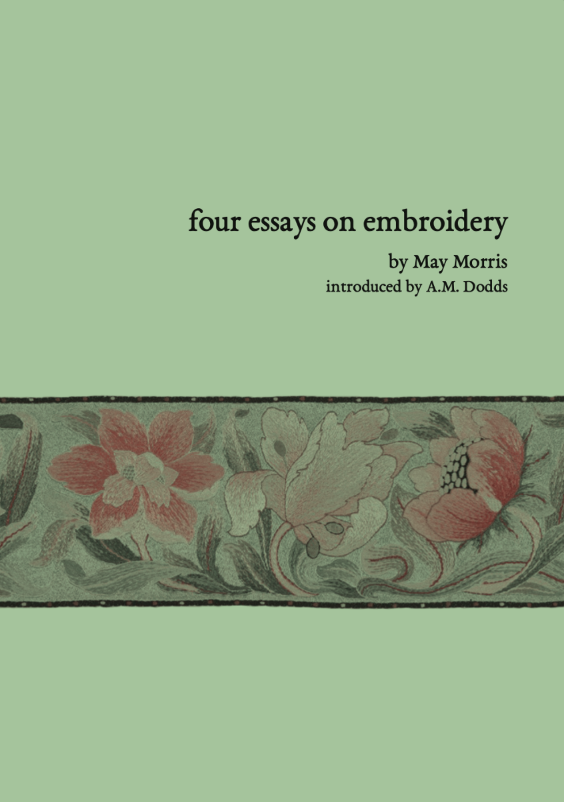

Four Essays on Embroidery/h1>
by May Morris, introduced by A.M. Dodds
36 pages
Risograph printed on FSC certified 100% recycled paper.
Stitch bound by hand with 100% linen thread made in the UK.
This collection brings together four of May Morris’s essays on embroidery- three from a collection entitled Arts and
Crafts Essays (1893), Of Embroidery, Of Materials, and Of Colour, and one first published in The Century Guild
Hobby Horse, Chain Stitch Embroidery. These essays explore embroidery as a craft, a form of art, and a political
practice. Morris devoted much of her life to supporting women in the arts, and an important part of this effort was
insisting on the legitimacy of art forms mostly practiced by women, such as embroidery. These essays discuss the
history of embroidery, the applications of different stitches, colour theory, and general approaches to the craft. A
thread of Morris’s feminist and socialist ethos runs through the background, as she examines embroidery as a form of
gendered labour in the face of industrial capitalism. These themes are explored in a fantastic introduction by art
historian A.M. Dodds, whose work focuses on ecocriticism of Modern British Art and the Arts and Crafts
Movement.
May Morris (1862-1938) was an artist, writer, socialist, feminist, embroiderer, jewellery designer, and teacher. Born to
arts and crafts movement leader William Morris and his wife Jane Morris, an artist’s model and embroidery, She
trained at the National Art Training School (Now Royal College of Art) and went on to run the embroidery
department of Morris & Co. In 1907 she founded the Women’s Artists Guild out of protest for the sexist admission
policies of the Art Workers Guild. Morris continued to work for Morris & Co in an advisory role after her father
passed, and spent the last twenty years of her life at her family home Kelmscott Manor with her partner Mary Lobb.
Current UK Stockists:
- Housmans Bookshop, London
